PROPOSAL · proof only · not approved
You chose page B (risk first) with hero B. This page compares the B readers first saw with tightened B, now reviewed, and one more fix after the review.
Summary quoted from the copywriter's PROPOSAL.md (83b68ce).
A real, running build with the motion on. Add ?static to its address to see the finished state with no motion. The B readers first saw is frozen at cdfee91, and the tightened B that readers and review-qa checked at 50bf121. The page you open now also carries the privacy fix below, which nobody has read yet. Page A is frozen as it was and is not part of this proposal (page-a/ARCHIVED.md).
Mixed, and not a vote for B. Two rounds of fresh AI readers, three at a time, same prompt and model. The first round read the old B, the second read tightened B at 50bf121.
Scores out of 5, in this order: job clarity / story / visuals / finding data, safety and cost / readiness to decide.
| Page | R1 | R2 | R3 |
|---|---|---|---|
| Rejected baseline | 4/3/2/4/2 | 4/3/2/3/2 | 4/3/2/4/3 |
Old B cdfee91 | 4/3/3/3/2 | 4/3/3/3/2 | 4/3/3/3/3 |
Tightened B 50bf121 | 4/3/3/3/2 | 4/3/3/4/2 | 4/3/3/3/3 |
Readiness did not improve. The one higher findability score is a narrow signal, not a general gain. What did land: all three readers of tightened B found both outside recipients, what each receives, and the dated unit price.
Still open after tightened B: two of three still flag "No zero server receives your email" as easy to read as nothing leaving the Mac. That line is now replaced (see below), but the new line hasn't been read yet. All three ask what typical use costs and how the installer's Claude Code fits optional drafts. Those two are product questions for you, not copy fixes, and the page doesn't invent an estimate. Two of three flag the hero's archived folder beside Trash (review-qa's finding, below).
The readers are AI models reading stills and copy, not people and not live motion. Each round uses new sessions, so rounds are matched in procedure, not the same readers twice. Full analysis: slices/01-copy-and-story/proof/rethink/TIGHTENED-B-READERS.md and after-findings.md.
The two rows where mail data leaves your Mac now come first, together, on their own dithered band. Each names its recipient in a black label on its own line: Sent to TypeSafe (Jev): and Sent to your coding tool's provider:. The cost row comes straight after, with Jev 1.13's per-token price dated 30 Sep 2026, then Google sign-in and the installer.
After the review: readers still misread the old reassurance, so it's now one full-width statement directly under the pair: "TypeSafe receives sorting data. Your tool's provider receives draft data. Neither goes to zero's servers." It says who does get the data before saying who doesn't. The lede above the window ("Read connected Gmail in Gmail or Apple Mail.") is cut to pay for it, since the hero already says you keep using Gmail or Apple Mail. Net +1 word, 550 of 550.
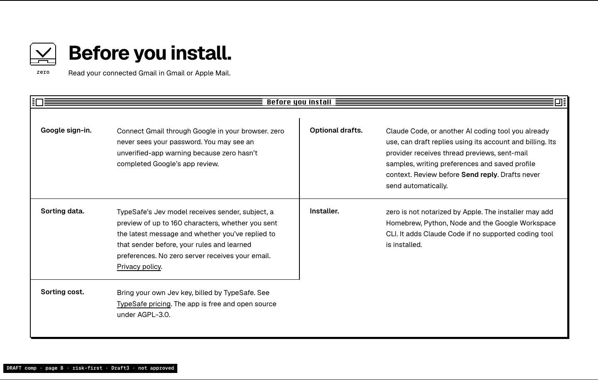
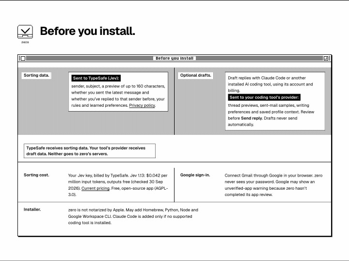
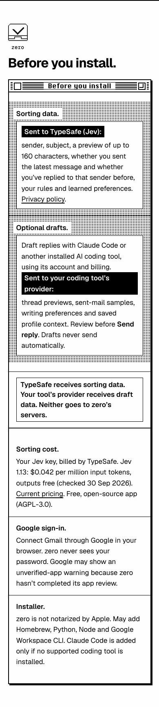
Every data field is still listed, and no disclosure was cut. The labels are real text, so a screen reader hears the same thing. An acceptance check confirms the row order, the pairing, that each recipient label sits on its own line, and that the privacy statement is its own full-width line between the pair and the price, in both engines. The old sentence is gone from the page.
Owner note, not on the page: B makes no schedule promise. If you want scheduling mentioned, the only true line is: "Scheduled runs need zero's launch agent installed and loaded. Set time and days in Settings → Daily routine." That needs your decision and a new word count. Evidence: schedule-and-price-evidence.md.
review-qa independently reran both engines (146/0 and 142/0, matching), re-probed the installer link (three clean redirects, so the earlier 429 was GitHub rate-limiting) and confirmed two earlier critique fixes are closed. It found one new issue, rated medium. The hero shows an empty Trash beside the archive folder, and the page promises "Nothing is deleted." Reader 1 ranked "remove or explain the Trash icon" their top fix. Reader 3 flagged the same pairing.
We recommend dropping the Trash icon. It's already drawn empty, and the question readers ask is why it's there at all, which an empty-state cue can't answer. The folder carries the story alone. Trash is part of the hero you approved, so this is your call. We haven't changed it. Dropping it removes one word ("Trash"), so the page would count 549.
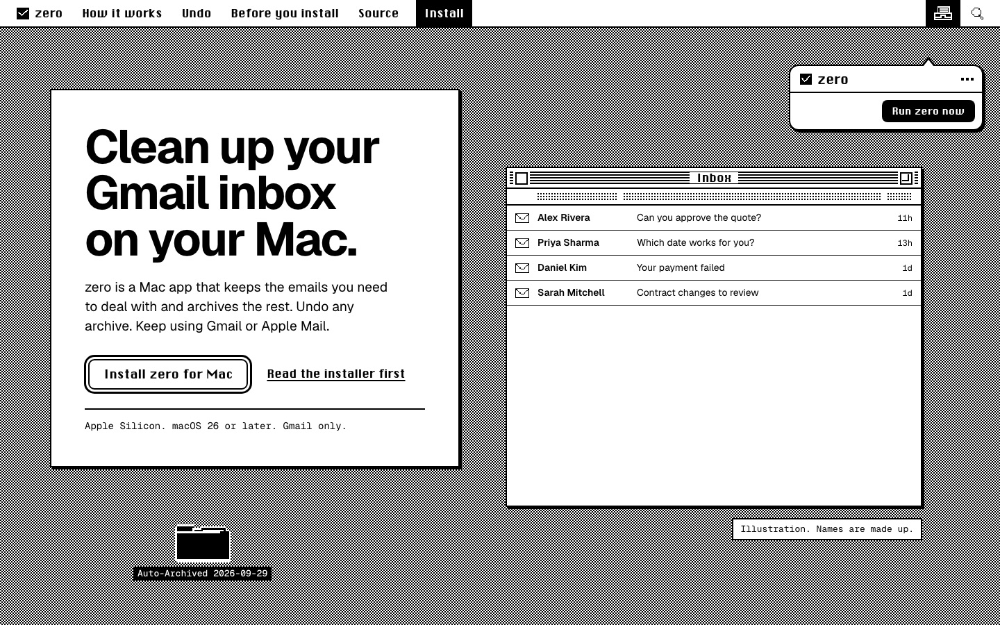
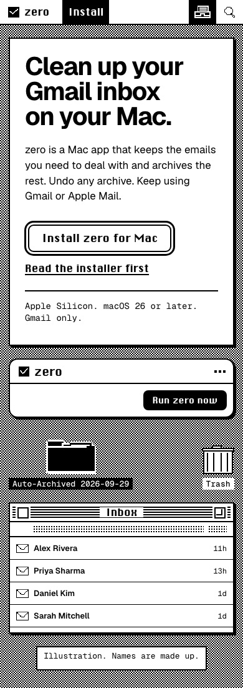
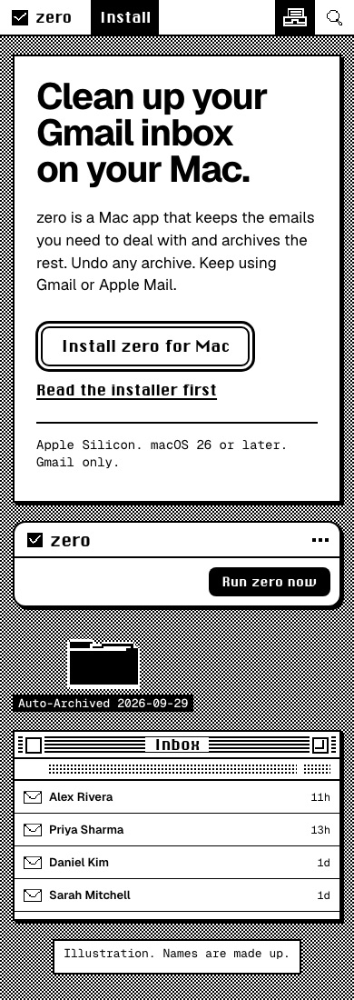
Review: slices/05-independent-qa/proof/proposal-review.md (df6632d). The mock removes the icon in a live browser. It isn't built into the page.
Quoted from the copywriter's table (PROPOSAL.md at f3234ce): the tested B at cdfee91 against the selected copy at 85dfe6f. It compares the wording only. It doesn't claim new readers understand it better.
| Page element | Tested B before | Tightened B | Why, and what stays |
|---|---|---|---|
| Story order | Hero, Before you install, Rules, Undo, Terminal | Same risk-first order | Owner chose B. No A recovery-first material is ported in. |
| Hero | Approved words and Run zero now → Working… | Unchanged | No automatic daily-run promise, new counts or invented actions. |
| Ledger order | Google sign-in, Sorting data, Sorting cost, Optional drafts, Installer | Sorting data, Optional drafts, Sorting cost, Google sign-in, Installer | Both outbound recipients lead together, cost immediately follows. |
| Viewing context | “Read your connected Gmail in Gmail or Apple Mail.” | “Read connected Gmail in Gmail or Apple Mail.” | Same Gmail-only viewing truth, less filler. |
| Sorting recipient | “TypeSafe's Jev model receives” before the field list | Bold “Sent to TypeSafe (Jev):” before the same complete field list | Sender, subject, ≤160-character preview, both reply signals, rules and preferences all remain. |
| zero server | “No zero server receives your email.” in the data paragraph | Same sentence, separately emphasized beneath the recipient | Not a claim that no email leaves the Mac. |
| Draft recipient | “Claude Code, or another AI coding tool you already use, can draft replies using its account and billing. Its provider receives” the context list | “Draft replies with Claude Code or another installed AI coding tool, using its account and billing. Sent to your coding tool's provider:” the same context list | Second provider stays explicit. Review before Send reply and no automatic send remain. |
| Sorting cost | “Bring your own Jev key, billed by TypeSafe. See TypeSafe pricing. The app is free and open source under AGPL-3.0.” | “Your Jev key, billed by TypeSafe. Jev 1.13: $0.042 per million input tokens, outputs free (checked 30 Sep 2026). Current pricing. Free, open-source app (AGPL-3.0).” | Dated provider unit price, not a per-inbox/month or permanent-price promise. |
| Sign-in warning | “You may see an unverified-app warning because zero hasn't completed Google's app review.” | “Google may show an unverified-app warning because zero hasn't completed its app review.” | Browser sign-in, no password, incomplete review remain. |
| Installer | “The installer may add Homebrew, Python, Node and the Google Workspace CLI. It adds Claude Code if no supported coding tool is installed.” | “May add Homebrew, Python, Node and Google Workspace CLI. Claude Code is added only if no supported coding tool is installed.” | Same conditions. “zero is not notarized by Apple” stays before the command. |
| Rules intro | “Run zero from its menu bar to sort connected Gmail accounts. … Check your first runs: the model can make mistakes.” | “Use Run zero now to sort connected Gmail. … Check your first runs: AI can make mistakes.” | Exact approved action name. The 110-word Settings editor is unchanged. |
| Recovery | “… Find archived mail in Gmail's All Mail under a dated recovery label.” | “… Archived mail stays searchable in Gmail's All Mail under a dated recovery label.” | Searchability explicit, no invented control or retention guarantee. |
| Terminal setup | “Open zero, connect Gmail, then add your Jev key …” | “Open zero, connect Gmail and add your Jev key …” | Command, key and release routes unchanged. |
| Clipboard states | No announced success or usable denial fallback | “Copied” / “Copy manually: press Command-C.” | Five words, counted. |
| Budget | 544, no clipboard strings | 549, clipboard included | One spare word. |
Scroll inside each frame. Same five sections, same order: hero, Before you install, Choose what needs to stay, Restore archived mail, Ready to install?
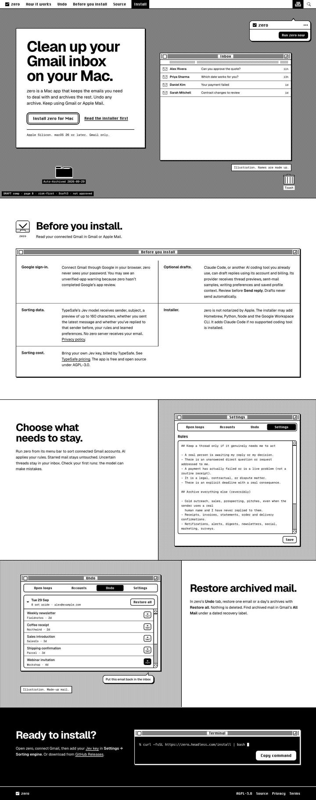
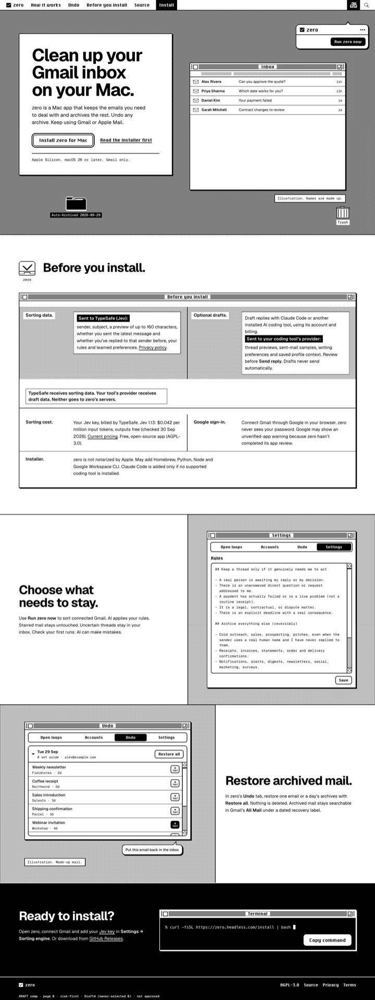
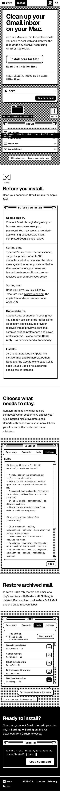
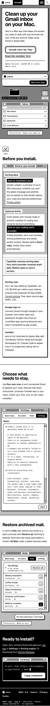
320 and 1920px, no JavaScript and reduced motion: page-b/shots.
| Item | Old B | Tightened B |
|---|---|---|
| Headings | Geist Bold (T3) | Same. Pixel face only on short labels |
| Line length | Up to 85 characters at 768 and 2560px | Median 51 to 66, never over 71, from 320 to 2560px (measured on real lines) |
| Short text beside tall windows | Text stuck to the top, empty space below | Text centred beside its window from 1100px |
| Facts window | An empty cell in the grid | Rows pair up. The odd last row spans the width |
| Rules text | One line wrapped by hand mid-sentence | 13 lines, verbatim, with a hanging indent |
| Undo list (5 of 8) | One reader missed that it scrolls | A sixth row cut off by the window edge shows there's more. No extra words |
| Copy command | Could show a button that didn't work | Shown only where copying works. Says "Copied", or on denial selects the command and says "Copy manually: press Command-C." |
| Links | Privacy, Terms and installer links only worked on the live site | Point at zero.headless.com, checked |
| Motion | One beat per section | Same four beats. Also settles at once if you turn on Reduce Motion mid-visit, or open a link straight to a section |
Words: 549 at 50bf121, then 550 of 550 with the privacy fix (Draft5, dcaabd6), counted by the copywriter. Line-by-line copy: slices/01-copy-and-story/proof/rethink/SELECTED-B-COPY.md.
Each window acts out its one point, frame by frame, once, when you scroll to it. With reduced motion or no JavaScript you get the finished state.
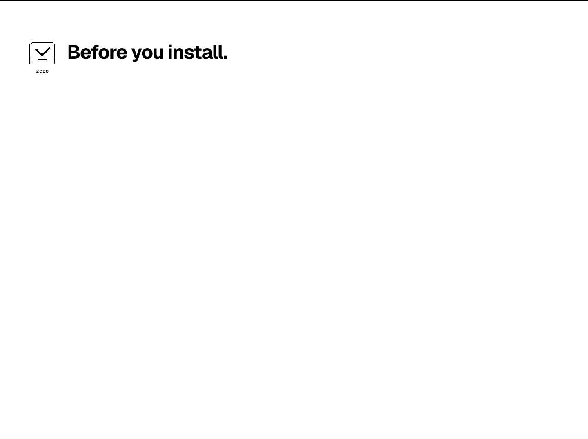
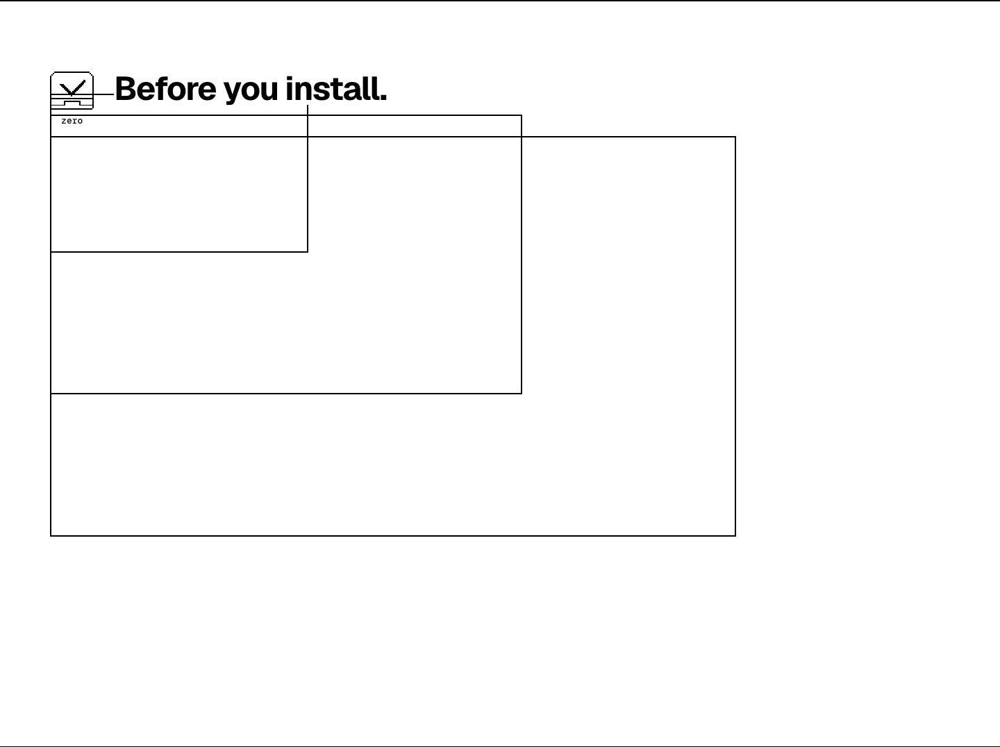
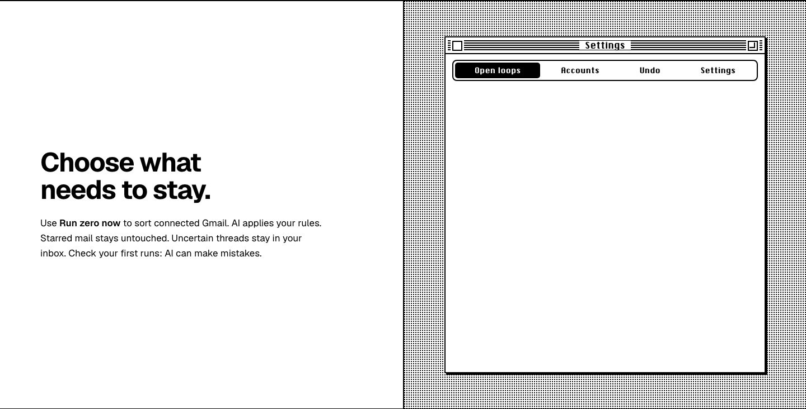
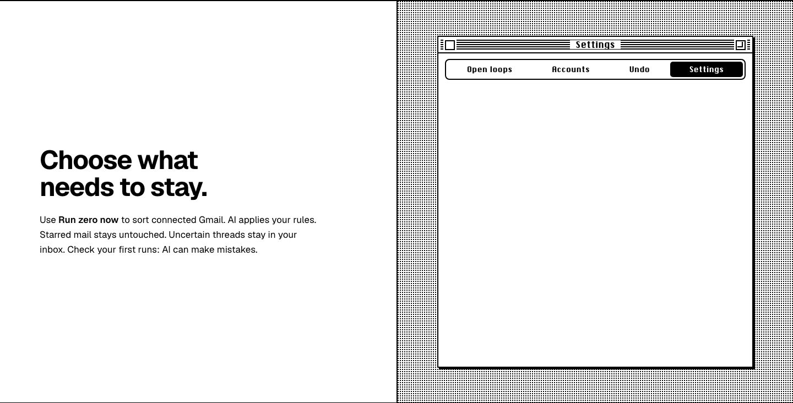
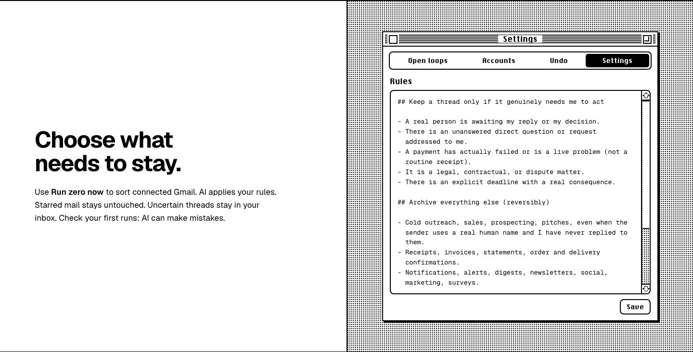
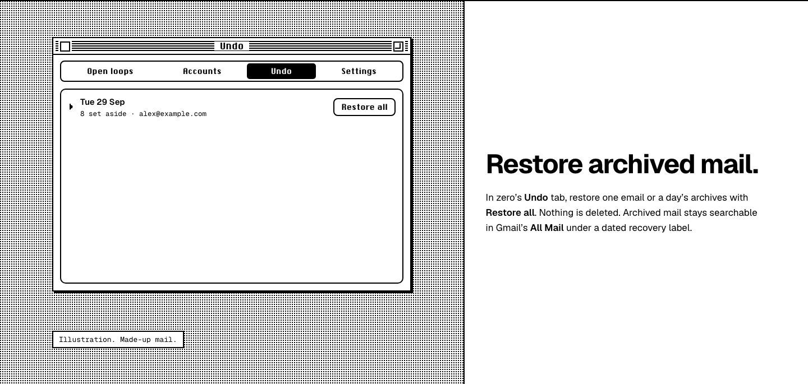
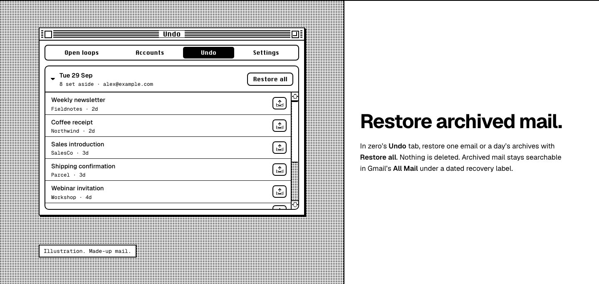
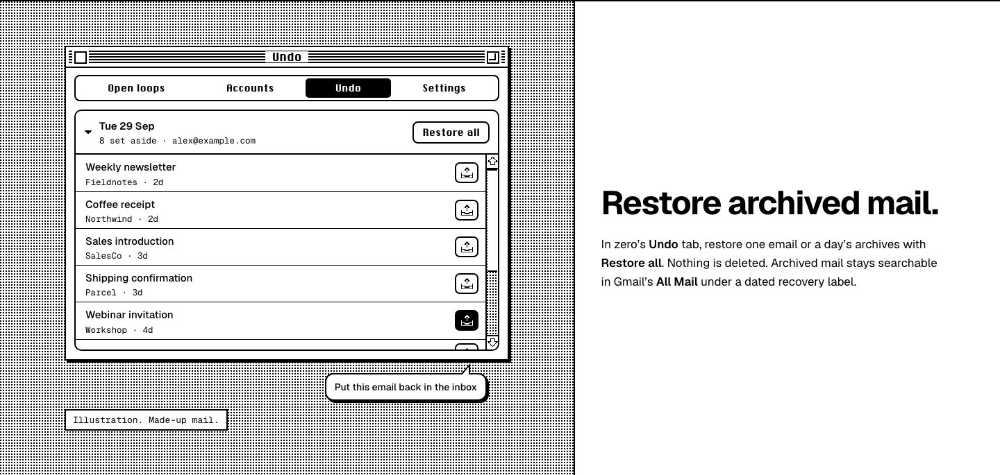
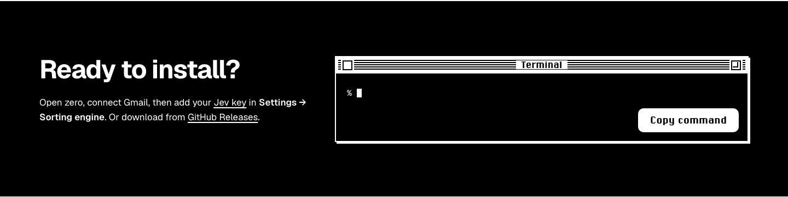
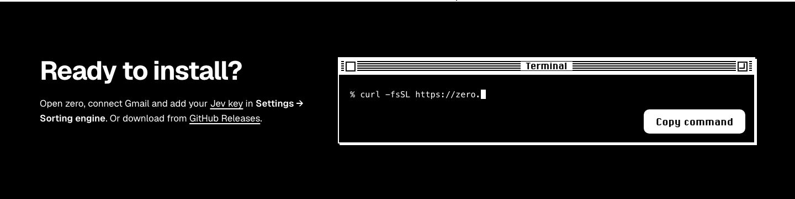
No layout shift from the section beats, measured in Chromium. Spec: proof/MOTION-SPEC.md §4.2.
| Check | Result |
|---|---|
| Automated acceptance, 320 to 2560px | At 50bf121: Chromium 146/0, WebKit 142/0, reproduced independently by the copywriter and by review-qa. With the privacy fix: Chromium 148/0, WebKit 144/0 (adds the privacy-line check and a scroll-timing check). No sideways scroll, text stays in its section, rendered words match the counted copy, the no-JS and reduced-motion states equal the finished page, keyboard focus only reaches real links and Copy command. Run on acceptance/serve.py: the plain Python server reset about 1 in 15 Chromium script requests, which showed up as false failures |
| Scroll timing | development-motion found that a reader scrolling very early could skip a section's beat, or leave it blank (reproduced on 50bf121). Fixed in the shared motion script and covered by a new check |
| Copy command | Tested with a stand-in clipboard (allowed, denied, missing), not the real system clipboard |
| Fresh readers on tightened B | 3 read 50bf121: mixed, readiness unchanged (above). The privacy fix is not yet read |
| Adversarial review (review-qa) | Done on 50bf121 (df6632d): 1 new finding, the hero Trash. Re-check of the privacy fix pending |
| Installer link | One earlier run got 429 from GitHub. review-qa then saw three clean 302→200 redirects. Treated as rate-limiting, not a broken link |
| Not verified | Real Safari 26 and real iPhones or Macs. "WebKit" is Playwright's build. The readers are AI models, not people. |
Nothing goes live from this page, and nothing is built for the real site yet. Answers go through main-lead.